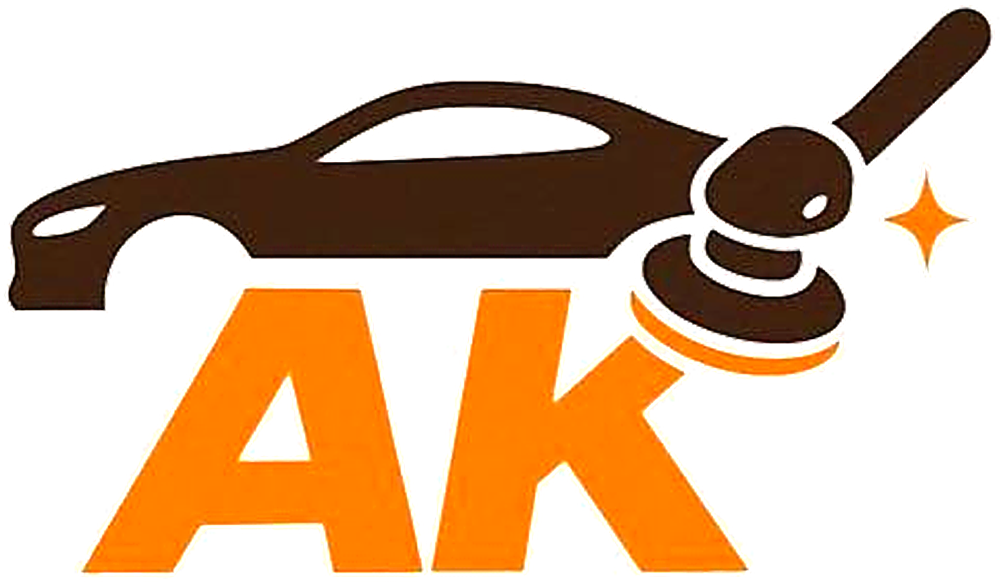

Детейлинг — это набор навыков возврата машине идеального вида: без вмятин, без сколов, без царапин на стекле. Спрос есть всегда, потому что машины царапаются каждый день, а не раз в год.
Короткое видео с реальной работой: инструменты, процесс, результат. То, что вы увидите на первом занятии.
Профессия детейлера открывает несколько направлений для развития и заработка — от фриланса до открытия своей студии.
Фриланс и выездной сервис, гибкий график и свобода выбора клиентов.
Работа в ведущих студиях детейлинга, стабильный доход и карьерный рост.
Собственный детейлинг-центр, высокая маржинальность и масштабирование.
Премиальные услуги с высокой стоимостью и постоянными клиентами.
Экспертиза растёт — доход растёт вместе с ней. Потолка в заработке нет.
Можно освоить один и оттачивать его в совершенстве, а можно собрать все четыре и закрывать любую заявку, которая приходит на детейлинг-центр.
Защита от сколов и царапин, прозрачная и незаметная, повышает стоимость авто при продаже.
Отдельная высокомаржинальная ниша: авто, недвижимость, интерьеры, техника — 245+ направлений применения.
Возврат блеска и глубины цвета, защита лакокрасочного покрытия, подготовка к нанесению защитных покрытий.
Заводская краска сохраняется, работа занимает от 30 минут, дешевле покраски в 2–3 раза.
Не нужен опыт и специальное образование — программа рассчитана на новичка.
Обучают действующие мастера, а не теоретики.
Работа на реальных поверхностях с первого занятия, живой контроль мастера.
Не бросаем один на один с рынком после выпуска.
Подтверждение квалификации для работы и для клиентов.